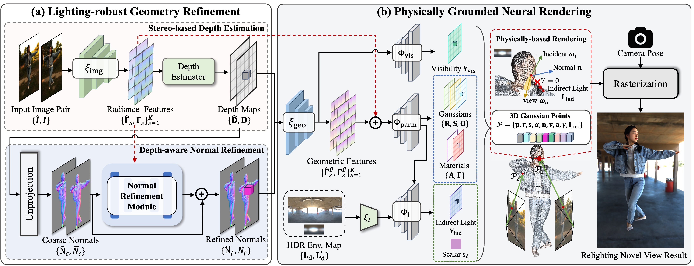

1Harbin Institute of Technology 2Tsinghua University
✉Corresponding author
We propose GRGS, a generalizable and relightable 3D Gaussian framework for high-fidelity human novel view synthesis under diverse lighting conditions. Unlike existing methods that rely on per-character optimization or ignore physical constraints, GRGS adopts a feed-forward, fully supervised strategy projecting geometry, material, and illumination cues from multi-view 2D observations into 3D Gaussian representations. To recover accurate geometry under diverse lighting conditions, we introduce a Lighting-robust Geometry Refinement (LGR) module trained on synthetically relit data to predict precise depth and surface normals. Based on the high-quality geometry, a Physically Grounded Neural Rendering (PGNR) module is further proposed to integrate neural prediction with physics-based shading, supporting editable relighting with shadows and indirect illumination. Moreover, we design a 2D-to-3D projection training scheme leveraging differentiable supervision from ambient occlusion, direct, and indirect lighting maps, alleviating the computational cost of explicit ray tracing. Extensive experiments demonstrate that GRGS achieves superior visual quality, geometric consistency, and generalization across characters and lighting conditions.

Overview of GRGS. Given sparse-view images of a performer under arbitrary illumination, GRGS first leverages the LGR module to reconstruct accurate depth and surface normals, and then employs the PGNR module for material decomposition and physically plausible realistic relighting from novel viewpoints.
@article{sun2025generalizable,
title={Generalizable and Relightable Gaussian Splatting for Human Novel View Synthesis},
author={Sun, Yipengjing and Wang, Chenyang and Zheng, Shunyuan and Li, Zonglin and Zhang, Shengping and Ji, Xiangyang},
journal={arXiv preprint arXiv:2505.21502},
year={2025}
}